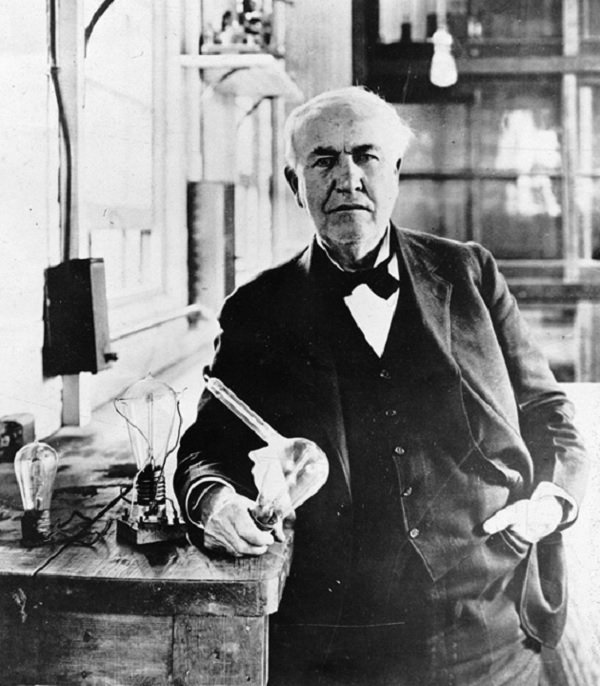

Thomas Alva Edison
El inventor más prolífico de la historia

Thomas Edison juntos a sus primeras bombillas construidas
Linea de tiempo de la vida de Thomas Alva Edison
- Thomas Edison nació el 11 de febrero de 1847 en Milan, una pequeña población de Ohio (Estados Unidos
- A los siete años, debido a la falta de trabajo, su familia emigró a Port Huron (Michigan) en busca de un futuro mejor.
- A la temprana edad de 12 años comenzó su actividad empresarial vendiendo periódicos y tentempiés en el tren matutino que iba de Port Huron a Detroit. Con el dinero que generaba, más que suficiente para sus necesidades, compraba libros de ciencia y material de laboratorio para sus inventos.
- A los 14, tras salvar al hijo del jefe de estación de un fatídico desastre, el padre del menor, en agradecimiento, se ofreció a enseñarle código morse y telegrafía. Este hecho, en plena era de la telegrafía, le aseguró trabajo como telegrafista hasta que a los 19 años decidiera trabajar por su cuenta como inventor autónomo.
- A los 21 años patentó su primer invento: un contador eléctrico de votos para el Congreso. Esta invención, sin embargo, fue un completo fiasco, pero le enseñó una gran lección: no volver a inventar algo que la gente no estuviera dispuesta a comprar.
- Dos años más tarde, en 1869, por encargo de la Western Union, la compañía telegráfica más importante por aquel entonces, construyó su primer gran invento: el Edison Universal Stock Printer (una impresora para la cotización de valores en bolsa). Los 40 000 dólares que recibió por esta invención le permitieron centrarse en su capacidad inventiva y abrir su propio taller (en Newark, Nueva York). Desde entonces pasó el resto de sus años dedicado completamente a sus inventos, entre los que destacan:
- El micrófono de carbón (1876): permitió mejorar las transmisiones telefónicas.
- El fonógrafo (1877): primer aparato que permitió registrar y reproducir sonidos.
- La primera bombilla eléctrica de larga duración (1879): primera bombilla incandescente con una duración de aproximadamente 48 horas.
- El quinetoscopio (1891): precursor del proyecto de cine.
- Finalmente, el 18 de octubre de 1931, debido a una complicación diabética, falleció a los 84 años de edad, pasando a la historia como uno de los inventores más prolíficos de la historia con la abrumadora cifra de 1093 patentes registradas en vida.